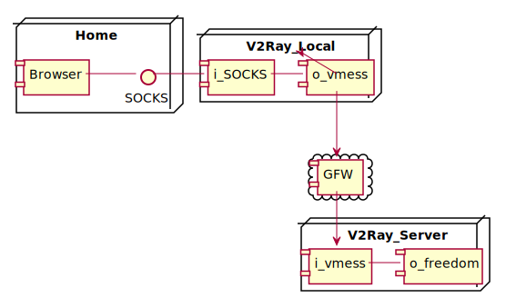

The general Proxy
- Clients <--> Proxy --> Server
- non-direct connection
- For server, client is anonymous (*)
- Foward the packet (*)
The general Proxy
- Distributed Proxy
- Clients <--> Proxy Network --> Server
- Reverse Proxy {:&.rollIn}
- Client --> Proxy <--> Servers
The general Proxy
Application Layer
Transport Layer
Internet Layer
Link Layer
SS Proxy
- User -> SS Client --> SS Server --> Source Server
- Seperation in Client and Server
- Confusion and Encryption (*)
- Protocol
- 1 For local, 1 For remote (*)
What is the Project V
- Project V provides a set of tools{:&.rollIn}
- To create your own network system
- To provide modules and tools, helping developers develop their own proxy application
V2Ray
The core of Project V
V2Ray
Single

V2Ray
Bridge

V2Ray
Structure

- Application Layer
- Proxy Layer
- Transport Layer
Structure
{
// Application Layer
"log": {},
"api": {},
"dns": {},
"stats": {},
"routing": {},
"policy": {},
// Proxy Layer
"inbound": {},
"outbound": {},
"inboundDetour": [],
"outboundDetour": [],
// Transport Layer
"transport": {}
}
Proxy Layer
Workflow

Proxy Layer
{
"inbound": {},
"inboundDetour": [],
"outbound": {},
"outboundDetour": []
}
Inbound
{
"port": 1080,
"listen": "127.0.0.1",
"protocol": "",
"settings": {},
"streamSettings": {},
"tag": "",
"sniffing": {
"enabled": false,
"destOverride": ["http", "tls"]
}
}
- port & listen: Listening address
- protocol & settings: Settings on protocol
- streamSettings: Control the transport =>
- tag: Identifier for routing
- sniffing: For detecting the type of packets
Workflow
Outbound
{
"tag": "",
"sendThrough": "0.0.0.0",
"protocol": "",
"settings": {},
"streamSettings": {},
"proxySettings": {
"tag": "another-outbound-tag"
},
"mux": {}
}
- sendThrough: The source Server=> For server has many ip addresses
- proxySettings: Chain Outbound
- tag: Specify the forward Outbound
- mux: Multiplexing TCP
Application Layer
Structure
Application Layer
"log": {},
"api": {},
"stat": {},
"routing": {},
"dns": {},
"policy": {}
Routing
{
"strategy": "rules",
"settings": {
"domainStrategy": "AsIs",
"rules": [
{
"type": "field",
"domain": [
"gov.cn",
"edu.cn"
],
"outboundTag": "direct"
}
]
}
}
Rules
{
"type": "field",
"domain": [
"gov.cn",
"edu.cn",
"geosite:cn"
],
"port": "0-100",
"network": "tcp",
"inboundTag": [
"tag-direct"
],
"protocol":["http", "tls", "bittorrent"],
"outboundTag": "direct"
}
Examples
Workflow
Basic
Proxy Chain
ProxySetting
Routing

Source Code
Golang Basic
// Variable declaration
// var identifier type_name
var num1 int
var num2 = 3
num3 := 3
// Array and Pointer declaration
// var var_name [SIZE] | * var_type
var num_arr [12]* int // pointer array
var point_arr *[12] int // array pointer
// Struct and Interface declaration
// type identifier struct | interface
type student struct {}
type Inbound interface {}
// Function declaration
// func indentifier([para list]) return_type
func swap(a, b int) (int, int) {
return b, a
}
Inbound
// An Inbound processes inbound connections.
type Inbound interface {
// Network returns a list of network that this inbound supports.
// Connections with not-supported networks will not be passed into Process().
Network() net.NetworkList
// Process processes a connection of given network.
// If necessary, the Inbound can dispatch the connection to an Outbound.
Process(context.Context, net.Network, internet.Connection, core.Dispatcher) error
}
Outbound
type Outbound interface {
// Process processes the given connection.
// The given dialer may be used to dial a system outbound connection.
Process(context.Context, *core.Link, Dialer) error
}